Computer Network Chapter 3
本文最后更新于：June 2, 2022 pm
Chapter 3: Transport Layer
Transport Layer Services(传输层服务)
传输层服务: 为在两个不同的主机上运行的应用程序之间提供逻辑通信。
传输层协议运行在端系统，发送方将应用程序报文分成数据段传递给网络层，接收方将数据段重新组装成报文传递到应用层。
在Internet上传输层主要有2个协议:
- TCP: 提供的服务有:
- 连接建立
- 可靠按序递交
- 拥塞控制
- 流量控制
- UDP: “尽力传递”，是IP的直接扩展，不提供其他服务。
说明: TCP和UDP均不能提供延迟保证和带宽保证
Multiplexing and Demultiplexing(多路复用和多路分解)
多路分解发生在接受主机上，传输层将接收到的数据段传递到正确的套接字即为多路分解。
多路复用发生在发送主机上，传输层从多个套接字收集数据, 用首部封装数据，然后将报文段传递到网络层即为多路复用。
多路的意思即是将一个数据段分给不同应用层的socket，因为同时可能会存在多个socket但都被封装为了数据段的格式。
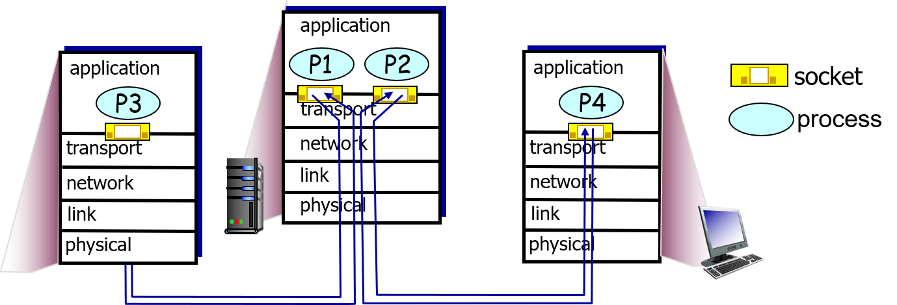
Demultiplexing Working Principle(多路分解工作原理)
主机从网络层收到IP数据报，每个数据报搬运一个数据段，每个数据段有源和目的端口号，主机用数据报中的IP地址和数据段的端口号来指明数据段属于哪个合适的套接字。
-
无连接多路分解(UDP): UDP套接字由两个因素指定:(目的IP地址, 目的端口号)。当主机收到UDP数据段时，检查数据段中的目的端口号并且用端口号指示UDP数据段属于哪个套接字。
具有不同的源IP地址或源端口号，但具有相同的目的IP地址和目的端口号的IP数据报指向同样的套接字。
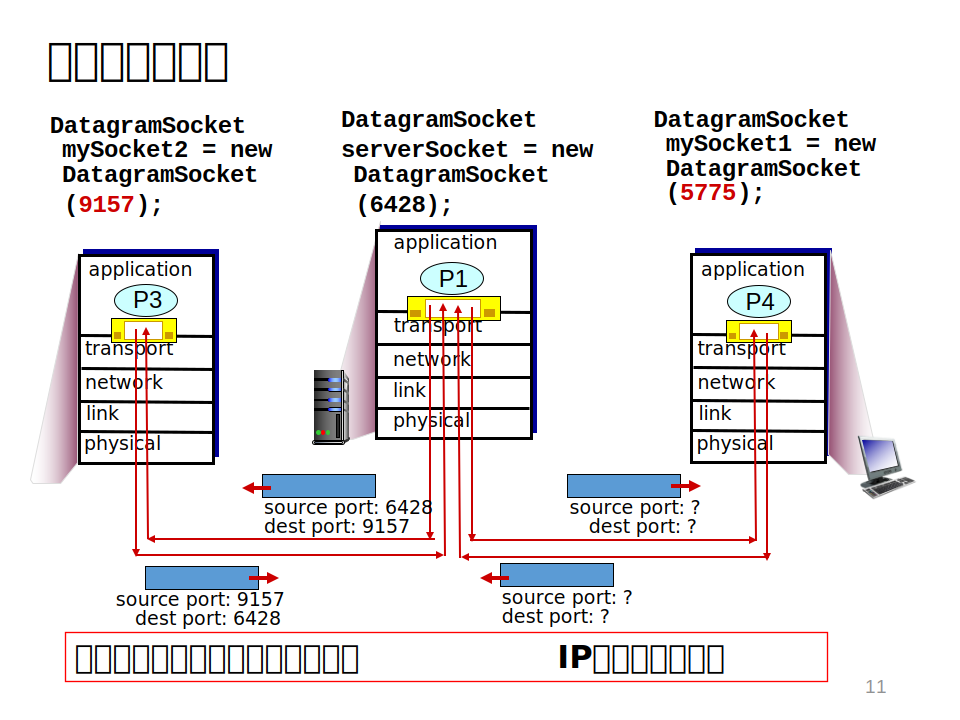
从上图可以看到，来自不同的源IP地址或源端口号，但具有相同的目的IP地址和目的端口号的IP数据报指向同样的套接字。 -
面向连接的多路分解(TCP): TCP套接字由两个因素指定:(源IP地址, 源端口号, 目的IP地址, 目的端口号)。接收主机使用所有四个值将数据段定位到合适的套接字。
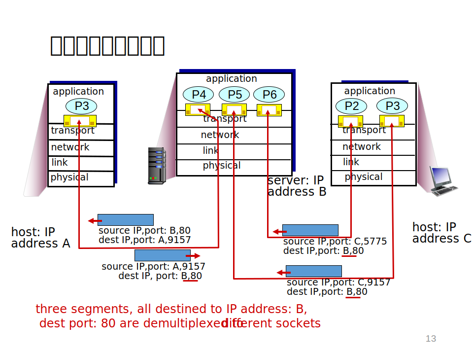
与UDP不同的是，即便是目的IP地址和目的端口号相同，但源IP地址和源端口号不同的IP数据报需要指向不同的套接字。
Connectionless Transport: UDP(无连接传输: UDP)
“无修饰”,"不加渲染的"因特网传输层协议。"尽最大努力"服务, UDP数据段可能: 丢失，会传递失序的报文到应用程序。
UDP的特点:
- 不需要建立连接 (减少延迟)
- 简单: 在发送者接受者之间不需要连接状态
- 很小的数据段首部(8B)
- 没有拥塞控制: UDP 能够用想象的快的速度传递
UDP Segment Structure(UDP数据段结构)
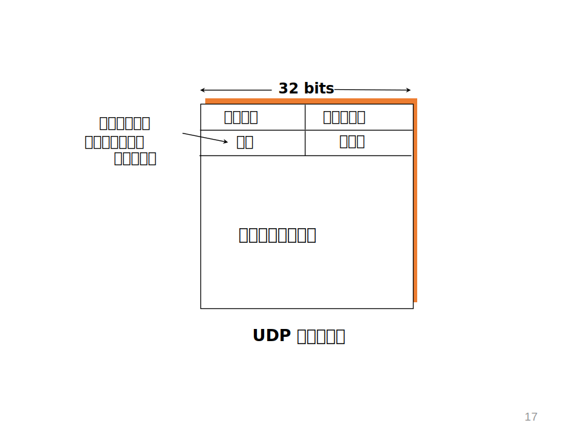
特别的: UDP数据段的首部长度为8B，而不是TCP的20B。并且UDP数据段的首部中长度属性为整个UDP数据段的长度。
UDP checksum(UDP校验和)
目标: 检测传输的数据段的"错误"(如bit丢失,bit错误)
计算方法:
- 发送方: 将整个数据段(此时校验和位还没有产生)看成16bit的序列，将整个数据段视为16bit的序列，依次相加，如果有溢出需要将溢出回卷到最低位，将最终结果取反得到校验和。
- 接收方: 使用与校验和的计算方法将整个数据段(包括校验和)按照16bit的序列全部加起来(中间出现溢出也需要回卷)，若全为1则通过了校验和检验，但仍可能出现错误，若不全为1则一定出现了错误。
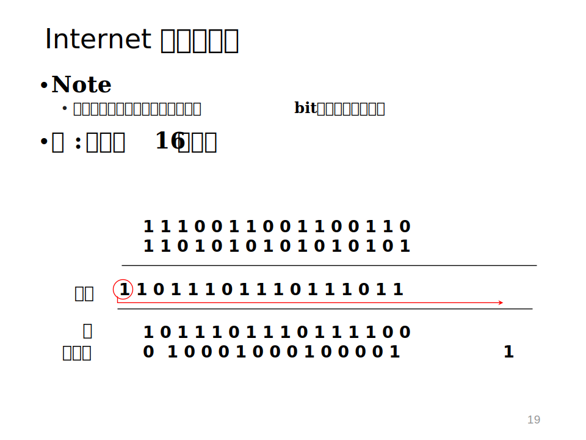
Principles of Reliable Data Transfer(可靠数据传输原理)
RDT发展过程
RDT1.0
RDT1.0: 完全可靠信道上的可靠数据传输。
前提:
- 完全可靠信道上不会出现bit错误
- 完全可靠信道上不会出现分组丢失
在完全可靠信道上进行可靠数据传输十分简单，发送方只需要将数据发送到下层信道，接收方从下层信道上获取数据即可完成可靠数据传输。
RDT2.0
但完全可靠信道几乎不可能出现，RDT2.0: 具有bit错误的信道，但不会出现分组丢失。在RDT2.0上实现可靠数据传输需要提供新的机制:
- 差错检验
- 接收方反馈
- 发送方重传
为实现上述机制，需要明确指出当接收方发现bit错误时的处理方法。以下为RDT2.0的有限自动机示意图:
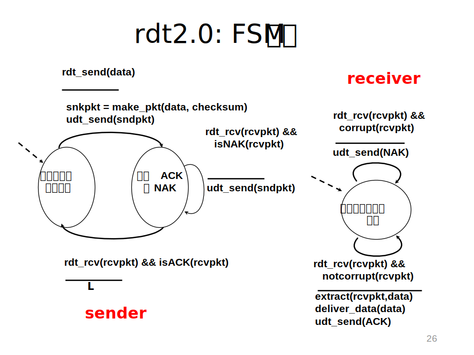
- 发送方: 将数据发送到下层信道，然后等待接收方反馈的ACK(正确收信息到)或NAK(错误收到信息)，若接收到ACK则继续发送下个包，若接收到NAK则重新发送上个包。
- 接收方: 从下层信道获取数据，通过UDP或TCP中的校验和来检测是否发生bit错误，若无发生bit错误则向发送方发送ACK并且继续接收，若发生bit错误则向发送方发送NAK然后重新接收数据直到收到正确数据。
但RDT2.0存在致命缺陷，即ACK与NAK可能发生混淆即ACK或NAK在向发送方传输过程中也有可能出现bit错误，这个问题由RDT2.1来解决。
RDT2.1
RDT2.1为处理ACK或NAK混淆问题，选择在收到ACK或NAK时同样进行校验和检验，若检验和正确则按RDT2.0的方式处理，若检验和错误则发生了bit错误，需要重新发送上一包。但这样会存在ACK发生了bit错误但发送方又重新发送了一次的情况，为避免重复，RDT2.1需要给每个分组加上序号，当接收方收到相同序号的数据段时会将其丢弃。
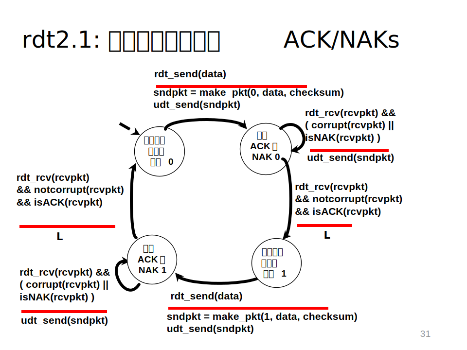
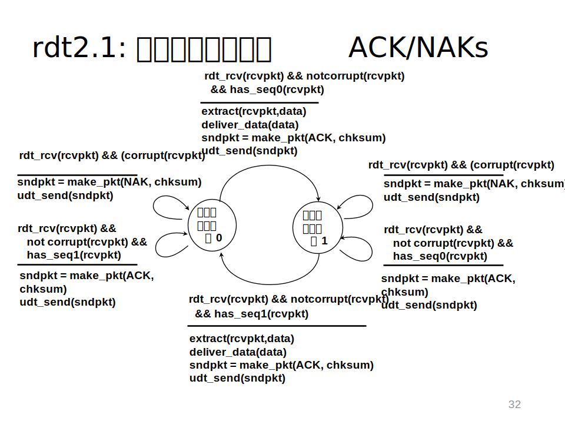
这里需要提出一个新的概念，停-等协议: 发送方发送一个报文，然后等待接受方的响应。 可以发现RDT2.0和RDT2.1均为停-等协议，由此可以引发以下思考。
仔细观察上方图中RDT2.1的sender和receiver可以看出，发送方附加的序号其实并非是数据包的唯一标识，而是只需要在0和1之间进行选择即可，这个特点是取决于停-等协议而产生的，只有确定了发送成功才会更新序号，因此只需要2个序号就可以完全满足识别的需求。同时由于停-等协议的特点，此时也不会出现后发出的包先被交付给上层的情况即数据包乱序问题。
RDT2.2
RDT2.2的特点在于取消了RDT2.0提出的NAK机制，由于RDT2.1中给每个分组加上了序号，因此在停-等协议中，接收方只需要在ACK中回复收到的数据包的序号即可实现ACK和NAK的功能。例如: sender发送了序号为0的包，receiver正确收到了序号为0的包则回复为0的ACK，若收到的数据包出现了bit错误，则回复为1的ACK。而接收方如果收到了与发送序号相同的ACK则为发送成功，若收到了与发送序号不同的ACK则为发送失败，需要重新发送。
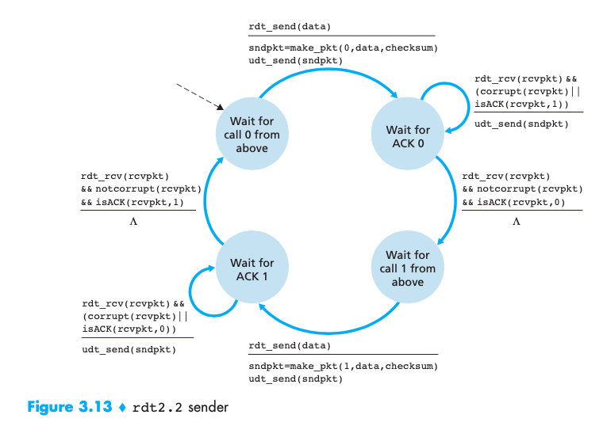
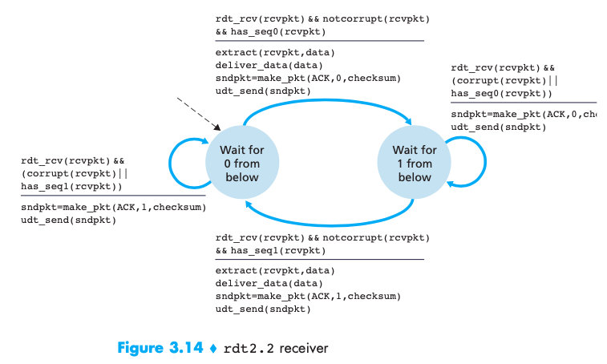
RDT3.0
RDT1.0: 具有bit出错和分组丢失的信道。与RDT2.0解决出现bit错误一样，当出现分组丢失的可能后需要引入新的机制来保障数据的可靠传输。在RDT3.0中选择的是倒计时定时器机制来实现保障。
定时器的工作原理:
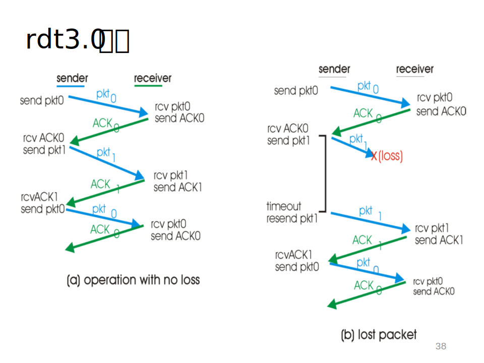
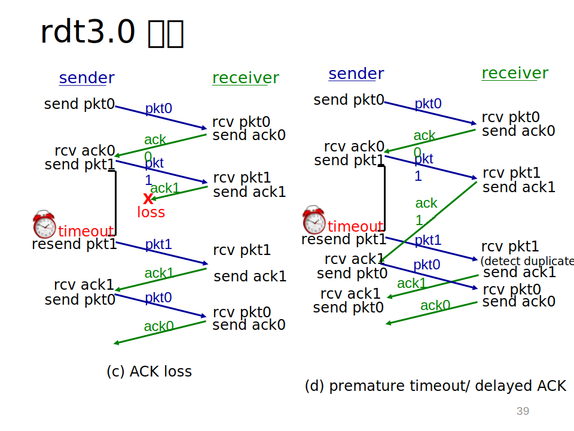
由上面两张图可以看出，引入定时器后情况会立马复杂很多，在上面展示了4种可能出现的情况，为便于理解需要全部掌握。
- 没有发生任何错误: 这是最为简单的情况，当没有发生任何错误时，RDT3.0与RDT2.2工作过程是完全相同的。
- 发生了分组丢失: 发生了分组丢失后，对接收方其实没有任何影响，因此接收方不会返回ACK，当超过定时器规定的时间后发送方仍然没有收到ACK的话，发送方则会进行重传，并且重置定时器。
- 发生了ACK丢失: 此时接收方是已经收到了分组，并且向发送方发送了ACK(无论是要求发送方重传还是发送成功)，但是由于ACK的丢失，在到达定时器规定的时间后发送方会认为本次发送失败于是会重新发送该分组，并且重置定时器。在收到重新发送的分组后接收方会发现已经收到了该分组，则会丢弃分组并且回复ACK。
- 发生了ACK阻塞: 此时接收方是已经收到了分组，并且向发送方发送了ACK(无论是要求发送方重传还是发送成功)，但是由于ACK的阻塞，在到达定时器规定的时间后发送方仍然没有收到ACK会认为本次发送失败于是会重新发送该分组，并且重置定时器。在收到重新发送的分组后接收方会发现已经收到了该分组，则会丢弃分组并且回复ACK。
其实我认为定时器机制下只有2位的序号是无法保障可靠数据传输的，特别是在ACK发生阻塞的情况下，极有可能发生出现了错误但没有纠正回来的情况。但是在课程中并没有做深入的讨论，我认为RDT的发展过程只是为我们实现可靠数据传输提供一个思路，并且在实际实现中TCP的可靠数据传输是比RDT3.0更复杂一些的，因此无需过于纠结本节的不完美之处。
Pipeline(流水线技术)
RDT3.0的效率其实是非常低的，当数据在传播时和接收方进行处理和回复的过程中的时间是被浪费的同时还有停-等协议要求的定时器等待时间也被白白浪费了，因此出现了流水线的方法来提高传输效率，就跟HTTP中的流水线一样。
流水线: 发送方允许发送多个"在路上的", 还没有确认的报文。但使用流水线技术对传输新增了以下要求:
- 用于标志分组序号的范围应当增加，因为采用流水线技术后不再能通过2位的序号来标志分组的唯一性。
- 发送方/接收方需要有缓冲区，由于采用流水线方法后，分组存在不按序到达的情况，但上层要求按序递交因此需要将先到的后序分组缓冲起来等待前面分组到达后再行递交。
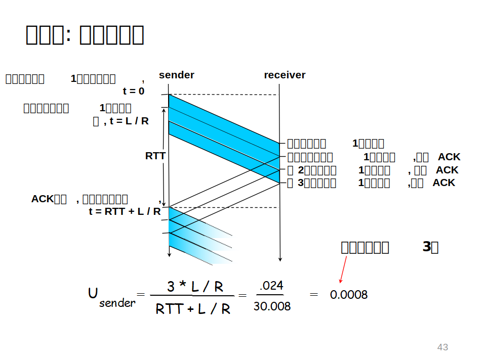
这里出现了一个很重要的概念: 发送窗口长度，即流水线操作中允许的最大未确认分组数量。从上面流水线运行示意图可以看到，利用率为相对于RDT3.0利用率的发送窗口倍，发送窗口越大利用率越大直到发送窗口对应分组传输时延大于一个RTT的时间。
Go-Back-N(滑动窗口)
在分组头中规定一个k位的序号。
- 发送方: 发放方为最早未被确认的分组启动定时器，然后发送所有在发送窗口内的分组，直到发送窗口内的分组全部发送完毕。当收到ACK为n时，确认所有的报文直到(包含)序号n。若定时器超时，则重发窗口中的报文n及以上更高序号的报文(只有一个定时器记录最早的未被确认报文的发送时间)。
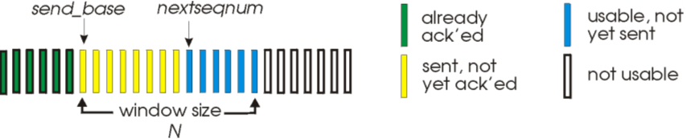
- 接收方: 发送累积ACK，假如收到分组与前面的分组之间有间隙，则不发送ack且丢弃失序分组(因此接收方无需缓冲区)。
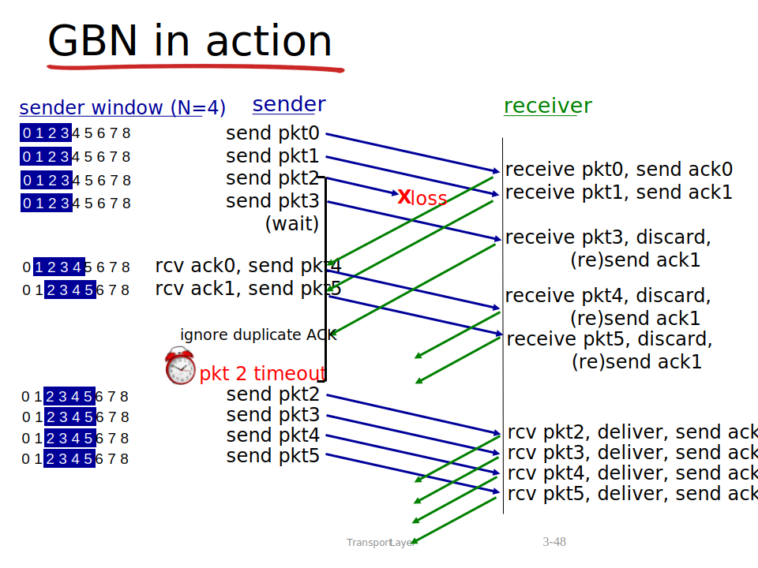
重要说明: GBN的窗口大小为(k为序号位数)
Selective Repeat(选择性重传)
在分组头中规定一个k位的序号。
- 发送方: 发送方需要对每个没有确认的报文都要启动一个定时器(每个未被确认的报文都有一个定时器)，并只重发没有收到确认的分组。
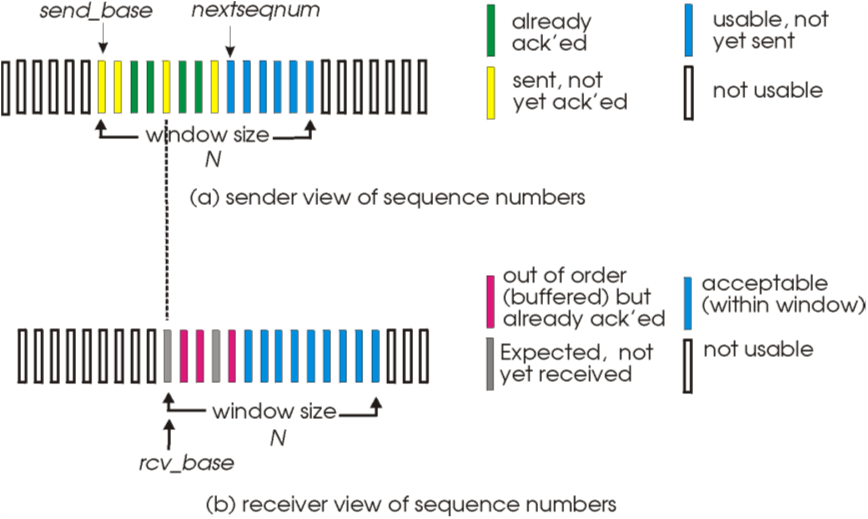 - 接收方: 接收方分别确认已经收到的分组，必要(收到分组并非按序)时，缓冲分组, 最后按序提交给上层。
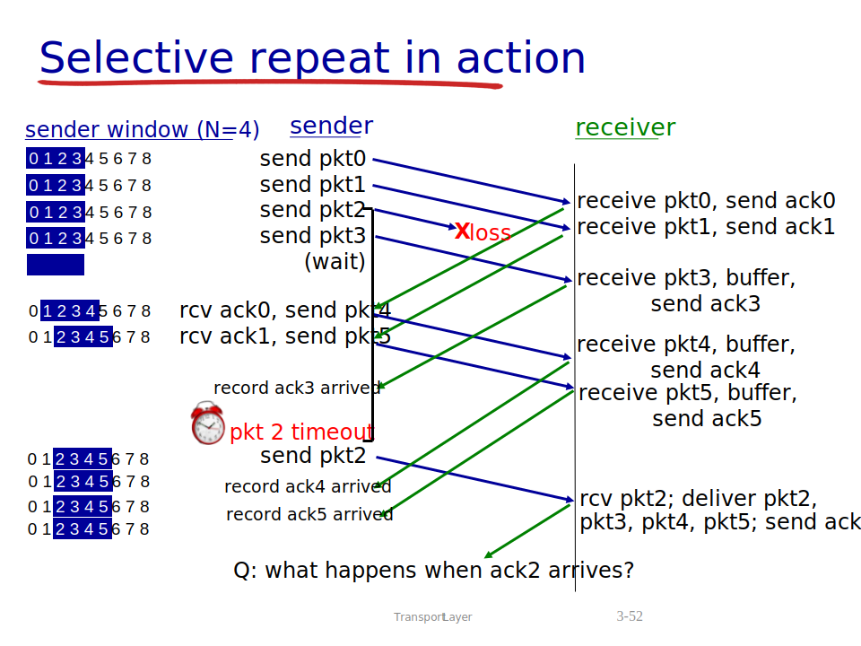
重要说明: SR的窗口大小为(k为序号位数)即发送窗口长度小于等于序号空间的一半(由两难选择决定)
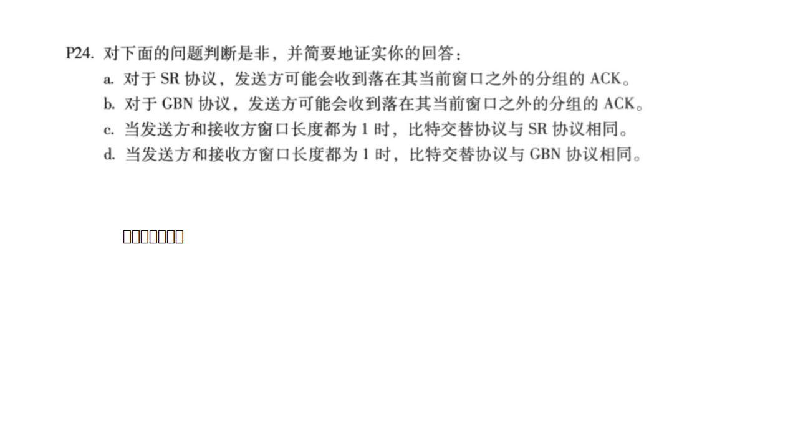
Principles of Congestion Control(拥塞控制原理)
太多源主机发送太多的数据，速度太快以至于网络来不及处理时，在网络核心区域(核心区域的路由器缓冲区溢出或排队)可能会出现分组丢失或高时延的情况。
拥塞产生的原因:
- 在路由器的排队时延趋向于无穷大，因此分组的总时延趋向于无穷大导致定时器超时重传。
- 路由器的缓冲区有限，当大量的分组涌入时，路由器只能丢弃一些分组，因此会导致某些分组的丢失。
拥塞控制的方法主要有2种:
- 端到端拥塞控制
- 网络辅助的拥塞控制
端到端拥塞控制
没有从网络中得到明确的反馈，是从端系统观察到的丢失和延迟推断出拥塞。具体实现会在下面的TCP拥塞控制中提到。
网络辅助的拥塞控制
由路由器给端系统提供反馈，从而控制拥塞。
- 单bit指示拥塞 (SNA, DECbit, TCP/IP ECN, ATM)
- 指明发送者应该发送的速率
TCP
TCP是一个最经典的传输层协议具有以下特点:
- 点到点: TCP在网络层的支持下实现点到点的传输，只存在一个发送方一个接收方。
- 面向连接: TCP要求发送方和接收方在数据交换前交换控制信息。
- 提供可靠的按序递交传输服务: 使用TCP作为传输层协议可以确保数据的可靠传输和按序向上层递交。
- 流水线服务: TCP提供流水线服务，提供了较高的效率，发送窗口大小由流量控制和拥塞控制共同决定。
- 全双工数据: 同一个连接上可以双向传输数据。
- 流量控制: TCP会控制发送方发出的数据包的速率，以保证不会淹没接收方。
- 拥塞控制: TCP会根据网络状况来控制发送方的窗口大小，避免无意义重传。
TCP Segment Structure(TCP数据段结构)
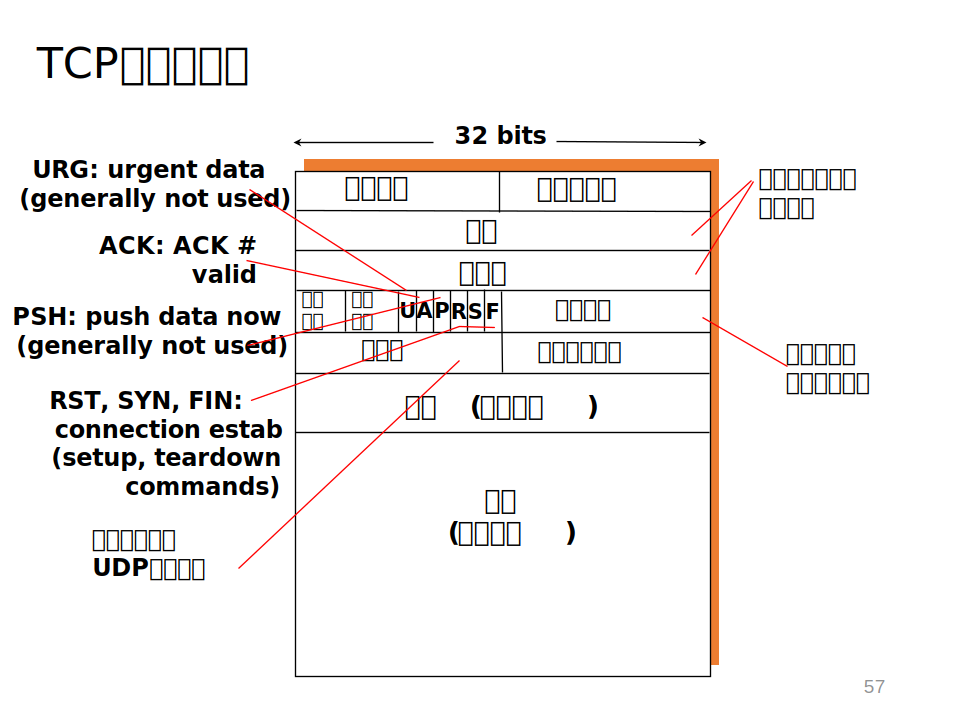
TCP的典型首部为20Bytes(没有可变长的选项)。
- 源端口号和目的端口号: 为TCP递交上层寻找socket提供帮助。
- 序号和确认号(seq and ack): 为TCP的可靠数据传输提供帮助。
- 标志位: 为TCP的控制信息提供帮助，包括建立连接等。
- 接收窗口: 为TCP的流量控制提供帮助。
- 校验和: 为TCP的可靠数据传输提供帮助。
- 紧急数据指针: 很少用。
- 数据: 承载应用层数据。
The TCP Connection(TCP连接)
TCP要求在发送方和接收方进行数据交换前需要交换控制信息，即约定seq等控制信号量。
三次握手建立连接
- 发送方发送一个特殊的TCP数据段称为SYN包(将标准TCP数据段的首部中SYN位置为1，同时需要将seq置为自己的开始序号)，指明要建立连接，接收方接收到后，发送ACK包，指明要建立连接。
- 当接收方收到SYN包后，需要为TCP连接分配缓存并计算自己的开始序号，当准备完成后向发送方发送SYNACK包(SYN为1，seq为接收方的开始序号，ACK号为发送方的seq+1)，指明要建立连接。
- 接收方收到SYNACK包，也需要为连接分配缓存，此时连接已经建立因此发送数据段的SYN位为0，但为了回应对SYNACK的正确收到，ACK为接收方的seq+1。
值得说明的是: 在第三次握手过程时，发送方可以在数据段的数据部分加上需要传输的数据了，但在前两次握手中数据部分均为空。
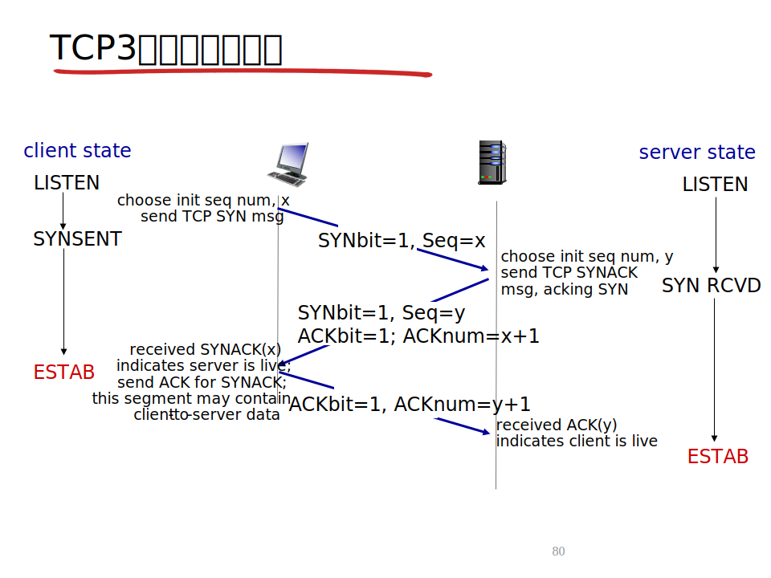
四次挥手断开连接
TCP连接上的任何一方均能终止该连接。
- 发起断开连接的一方发送FIN包(数据段首部中FIN位为1)，指明要断开连接。
- 收到FIN包后，需要返回ACK确认收到FIN包，指明要断开连接，收到FIN的ACK后，发起断开连接的一方进入等待另一方FIN包的状态。
- 接受连接断开的一方发送FIN包，指明要断开连接。
- 另一方发送FIN的ACK包，指明要断开连接，此时双方资源都将释放。
TCP’s Reliable Data Transport(TCP的可靠数据传输)
TCP的可靠数据传输仍然是通过序号+ACK+定时器机制来实现的，但在具体细节上与RDT3.0有较大的不同。同时TCP采用了流水线技术，相对于RDT3.0的效率大大提高，因此也扩展了序号位的大小，但又不是完全采用了流水线的Go-Back-N和Selective Repeat策略，而是有自己的快速重传方案，这里需要注意。
TCP的重传机制
序号:数据段中第一个字节在数据流中的位置编号。确认号:期望从另外一边收到的下一个字节的序号。 与RDT3.0不同之处: - RDT3.0: ACK号为正确收到的数据段序号。序号为一段循环的数字。 - TCP: ACK号为下一次期望收到的数据段序号。序号为从某位开始的递增数字。
TCP规范没有明确规定如何处理失序的数据段, 由编程人员处理。
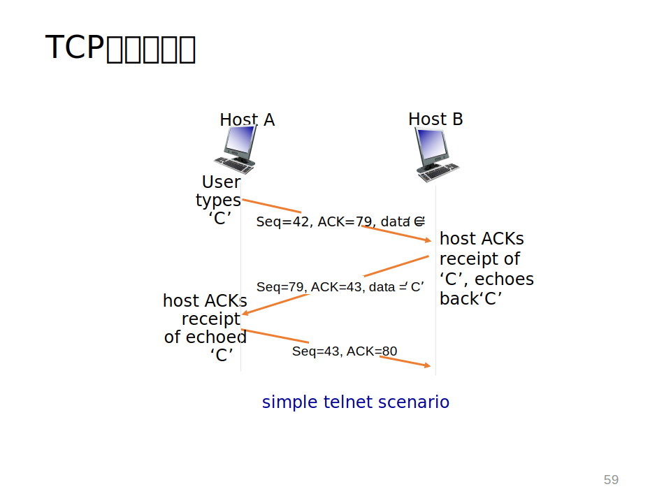
ACK的计算方法: 收到数据段的seq+收到数据段数据部分的长度。
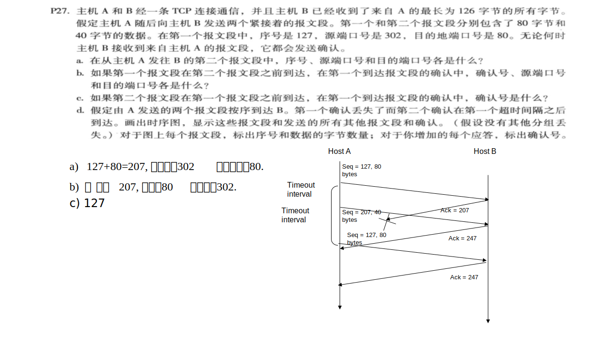
上面是TCP通过序号+ACK实现重传的方式，接下来是TCP使用定时器机制来避免分组丢失导致的数据丢失问题。
TCP的定时器设定
设置TCP定时器的要求和问题:
- 比RTT长，但RTT变化无法确定。
- 设置时间太短: 不成熟的超时会导致不必要的重传。
- 设置时间太长: 对数据段丢失响应慢。
因此需要估计RTT来确定定时器的超时时间。
样本RTT(SampleRTT): 测量从报文段发送到收到确认的时间。
样本RTT均值计算:
典型的:
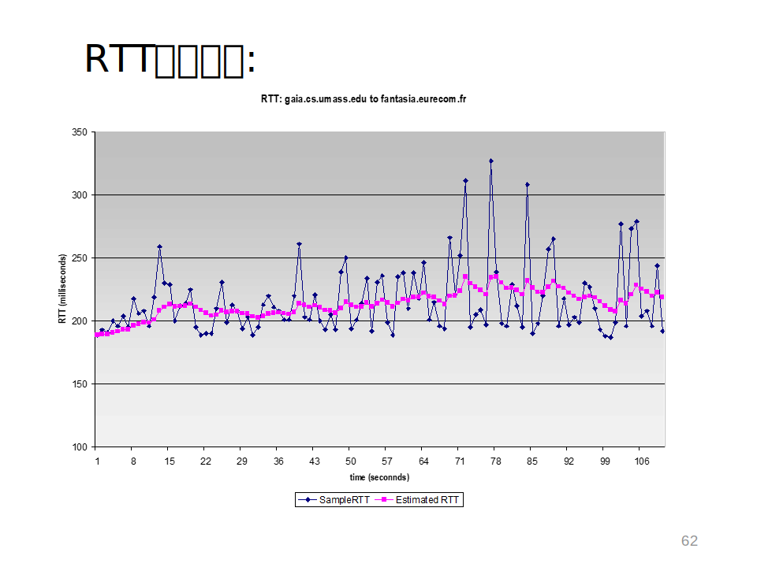
再通过EstimtedRTT 加上"安全余量"来设置定时器的超时时间。
安全余量的计算:
典型的:
最后算出定时器的超时时间:
TCP的流水线与定时器机制
TCP只有一个定时器。
用序号创造一个数据段，如果没有启动定时器，则启动定时器 (定时器是最早没有被确认的数据段发送时启动的)TCP的ACK仍然为累计确认，即当收到ACK为n时，确认所有的报文直到(包含)序号n。
TCP中ACK的产生:
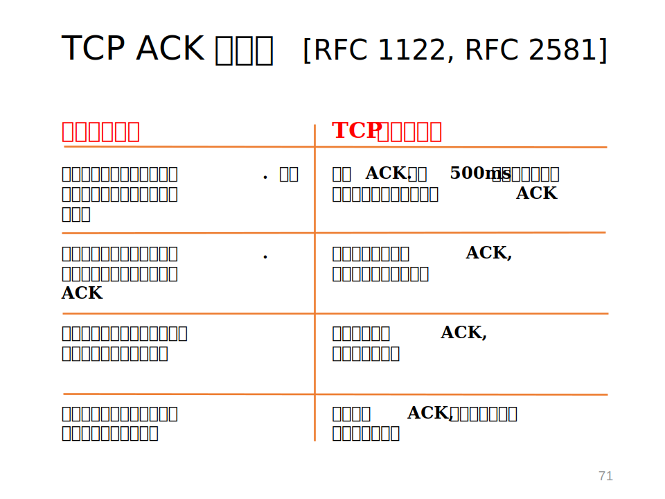
在上图可以看出，当只有期待序号数据段到达时，TCP不会要求接收方立马发生ACK而是会稍微延迟发送ACK的时间，这样会减少需要ACK的数量，但在计算时不需要考虑。
同时当收到乱序数据段时，接收方会发送期望的ACK，这样有助于快速重传的触发。
当发送方收到确认了还未确认的数据段ACK时，定时器会被重置。
TCP中重传的产生:
- 超时重传: 重发导致超时的数据段，而不需要重复所有未确认的数据段，然后重启定时器。
- 快速重传: 快速重传是为了避免超时周期往往太长导致的浪费时间。如果发送方收到3个对同样报文段的确认，则发送方认为该报文段据已经丢失，然后重传该报文段。
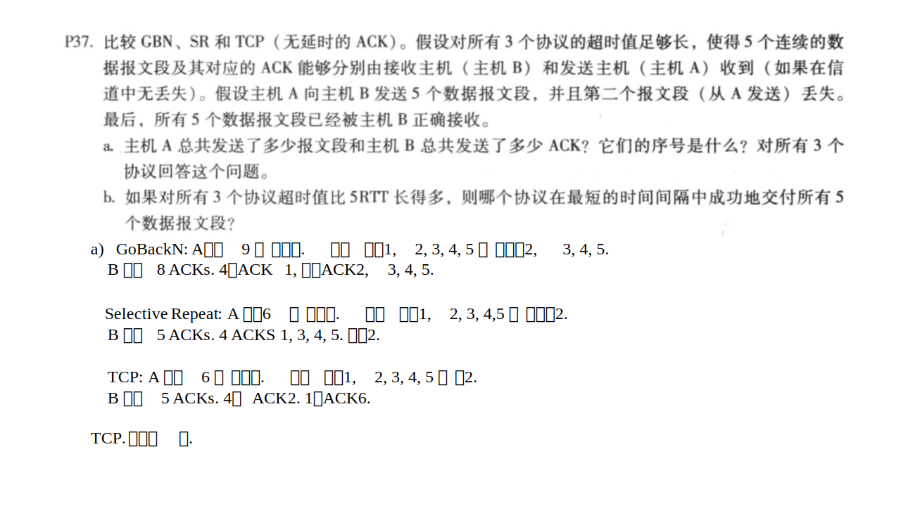
TCP’s Flow Control(TCP的流量控制)
接收方控制发送方，使发送方不会太快太多发送数据以致淹没接收方缓冲区。
实现方法: 接收方使用TCP头部消息中rwnd字段(即接收窗口单位为Byte或报文段数量)来通知发送方剩余缓冲区大小。
发送方限制已发送但是未被确认的数据量不能超过rwnd的值来保证接受缓冲区不会被淹没。
TCP’s Congestion Control(TCP的拥塞控制)
cwnd为拥塞窗口，单位为Byte或报文段数量。
MSS为报文段的最大长度。
TCP的拥塞控制方法:
- 加性增，乘性减: 每个RTT内cwnd增加一个MSS直到丢包，丢包后cwnd减半。
- 慢启动: 连接开始的时候, 窗口大小 = 1 MSS，然后以2的指数方式增加速率直到发生分组丢失。
对拥塞的反应:
- 出现快速重传时(连续3个相同的ACK): 窗口大小减半+3，然后以线性增长。
- 超时时: TCP进入慢启动状态并且阈值为发送丢失前的一半(向下取整)。从MSS为1开始以2的指数方式增加，到达阈值后以线性增长。指数增长阶段称为慢启动阶段，线性增长阶段称为拥塞避免阶段。
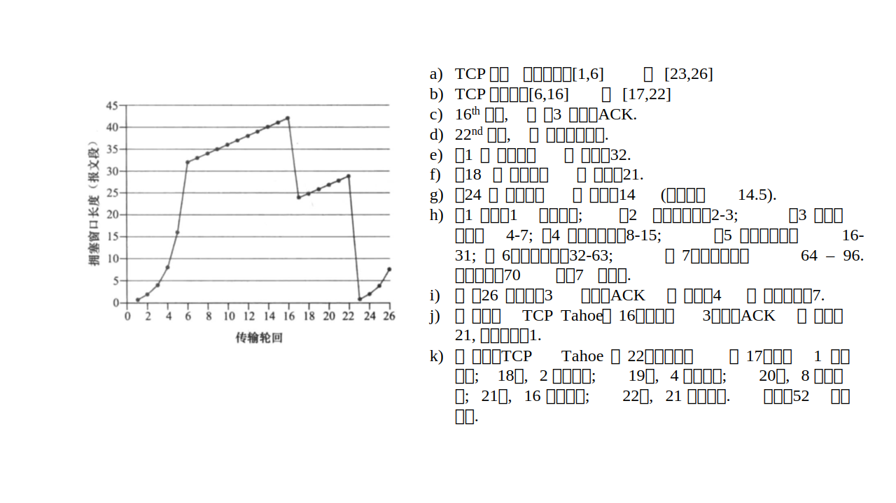
TCP’s Fairness(TCP的公平性)
公平目标: 如果K个TCP 共享带宽为R的瓶颈链路每个应该有的平均速率。
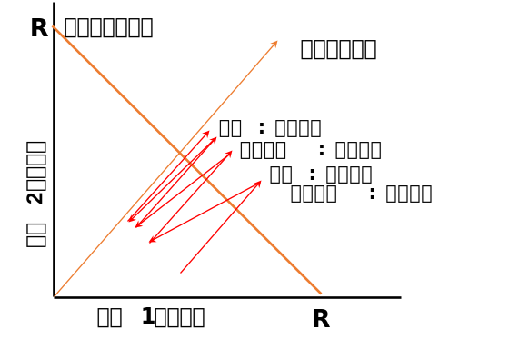
Review
传输层作为计算机网络中十分重要的一层，是承接从网络层到应用层的数据传输的关键层。他在不稳定信道的网络层上工作，却能向应用层提供可靠的、按序递交的服务(TCP)，也能为应用层提供快速的、尽可能快的服务(UDP)。在学习传输层中，最重要的我认为是如何在不稳定信道上建立可靠数据传输的思想: 序号+ACK+定时器机制，这种思维是本章最重要的部分。在复习过程中应该着重理解从RDT1.0到RDT3.0的发展做出的改变和TCP在实际运用中的实现，来保障思维的学习。
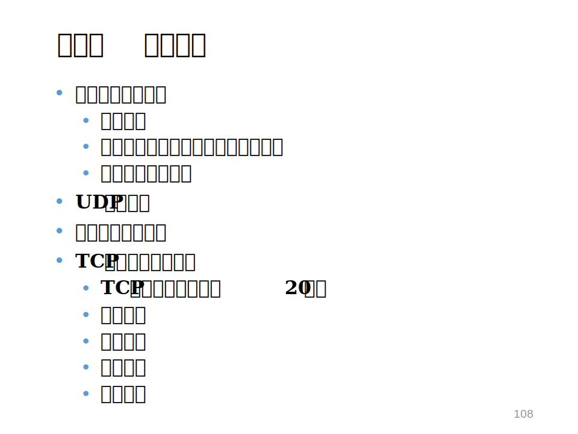
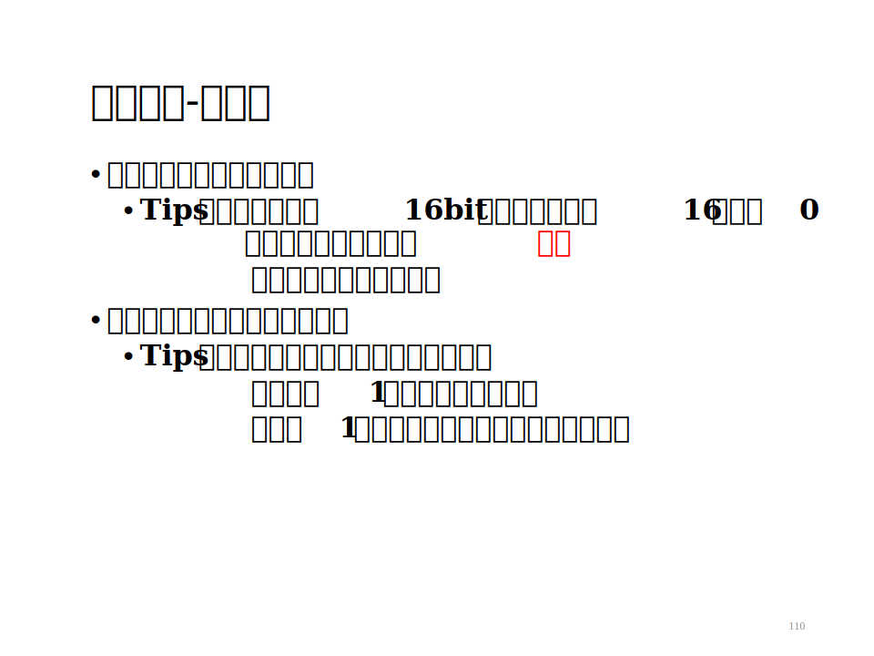
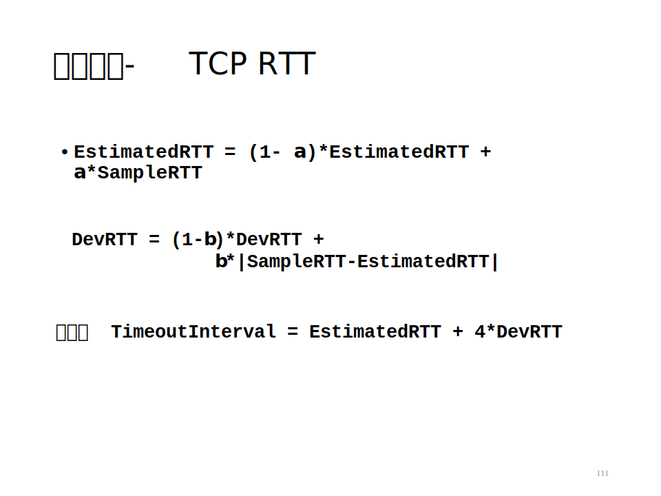
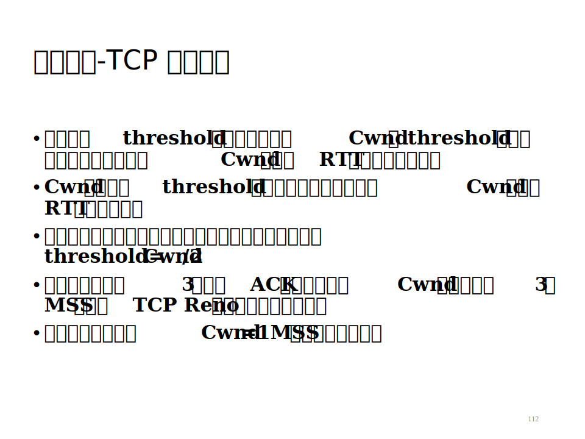
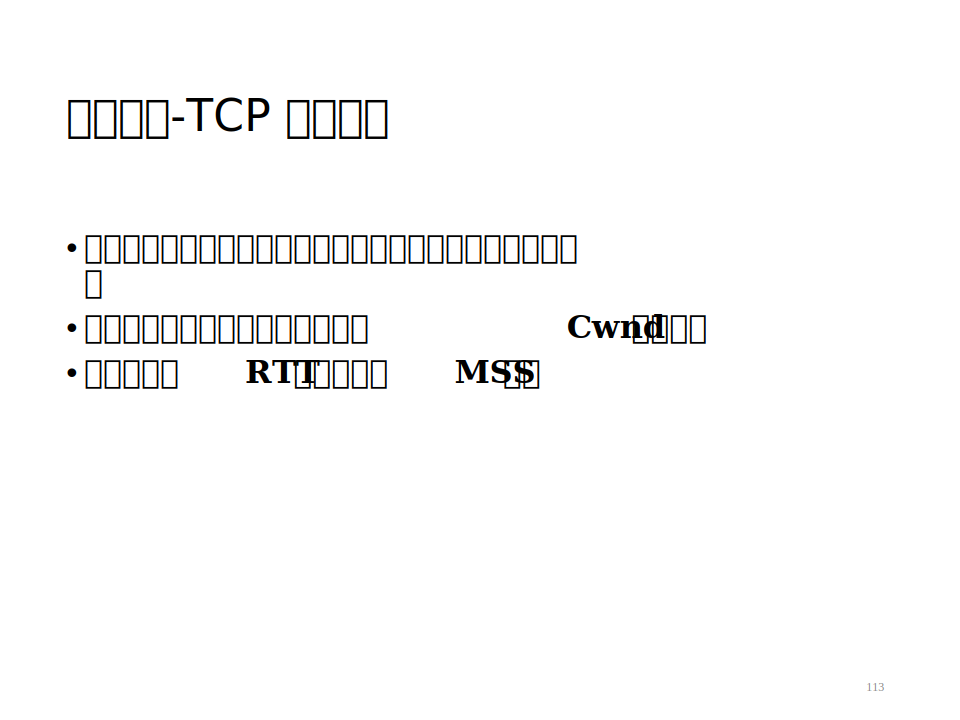
本博客所有文章除特别声明外，均采用 CC BY-SA 4.0 协议 ，转载请注明出处！